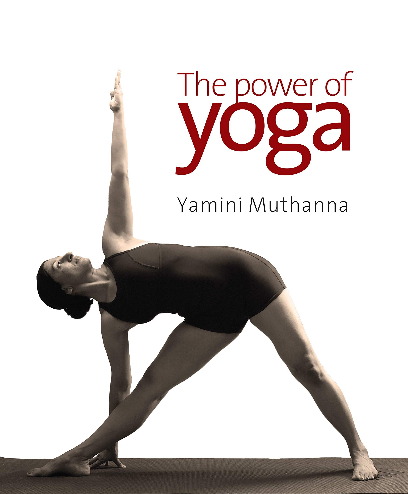
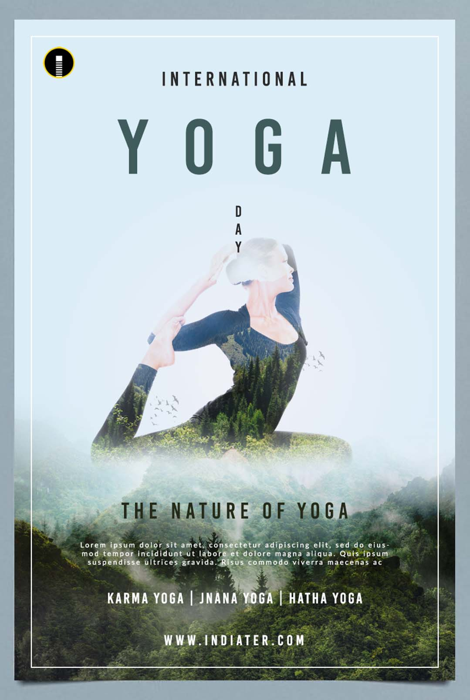

YOGA FOR EVERYONE

We are living in a fast-paced and digitized world.The pressure to succeed, meeting deadlines, delivering high-quality work, and erratic schedules have taken a toll on the physical and mental well-being of people.In light of this, it has become the need of the hour to create a balance, develop awareness and follow healthy habits. One can achieve this by including Yoga in their life. Unlike the common misconception, Yoga is not a religion but a way of life. Yoga is not limited to just postures and asanas but also involves pranayamas, kriyas, dhyana or meditation, breath work, living mindfully and following a healthy diet. Yoga is extremely significant for people who aim to master the mind, healthily manage their emotions and have a healthy and flexible body. Yoga offers innumerable benefits for physical, mental, emotional and spiritual well-being.
REFERENCE BOOKS
The Power of Yoga explores the profound nature of yoga by demystifying ancient Sanskrit texts on the subject and a plethora of philosophies governing its practice, and making them relevant to present times. While Patanjali’s Yoga Sutras provide us the roadmap to understand the way of this science, the 21 Yoga Sequences for modern lifestyle-related disorders elaborated upon in this book make it a valuable aid for the modern-day practitioner, more so since it is presented in simple language without diluting the authenticity of the techniques. Structured primarily as a Sequence Manual, this book offers customised yoga routines to help people cope better with their day-to-day demanding schedules. The sequences are also categorised and visually depicted for a better understanding. Ultimately, The Power of Yoga seeks to enlighten the readers on the deeper significance of yoga by encouraging them to further explore it as a time tested and an established science.
The Authentic Yoga is a profound commentary on the universal principles of Yoga, explaining the nature of a meditative mind, the effect of meditation on consciousness, how to realise our human potential and what happens when we succumb to likes and dislikes.Slow movements and deep breathing increase blood flow and warm up muscles, while holding a pose can build strength. Balance on one foot, while holding the other foot to your calf or above the knee (but never on the knee) at a right angle.In the Yoga-sutras, God is defined as a distinct self (purusha), untouched by sufferings, actions, and their effects; his existence is proved on the ground that the degrees of knowledge found in finite beings, in an ascending order, has an upper limit—i.e., omniscience, which is what characterizes God.
The Vedas were passed down for years from mouth to ear. Patanjali was the first that gathered and displayed the inheritance of ancient yoga to the future generations. Patanjali's Yoga Sutra is such a deep and detailed research, it has become the main epos of this subject.This has given rise to four broad classifications of Yoga: karma yoga, where we use the body; bhakti yoga, where we use the emotions; gyana yoga, where we use the mind and intellect; and kriya yoga, where we use the energy. All the ancient commentaries on Yoga focus on performing the Yoga under the direction of a Guru.It is believed that it originated in Northern India, approximately 5000 years ago. Dating back to 2700 BC, in the Indus-Saraswati valley civilization, seals and fossils have been found with people doing Yoga Sadhana.29-Nov-2021
In this beautiful book, illustrated throughout with colour photographs of Yoga practiced in the wild nature of Iceland, Susanne shares her depth of experience as practitioner and teacher with accuracy and grace. Originally published in German, this book is now available in English to a broader audience.Yoga is a generic term for physical, mental and spiritual disciplines, originated from ancient India. It is a spiritual and ascetic discipline including breath control, simple meditation and adoption of specific body postures, practiced for health and relaxation.Yoga is a system of practice dealing with physical, emotional, mental, and spiritual well-being, which has evolved over thousands of years. Yoga encompasses a direct experience with the entirety of body and mind.Thus the aim of Yoga is Self-realization, to overcome all kinds of sufferings leading to 'the state of liberation' (Moksha) or 'freedom' (Kaivalya).
